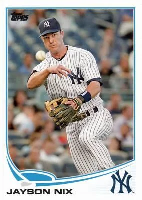

Jayson Nix
Career Highlights & Facts
(Facts are AI-generated and may require verification)
- Served as a vital defensive replacement and infield depth during the final seasons of the legendary Captain's illustrious career.
- Possessed a unique defensive profile, having logged significant time at every infield position, including a rare appearance at first base, while also seeing action in the outfield.
- Was a journeyman who navigated the league through a series of waiver claims and free agent signings, ultimately finding a home in the organization's city for two seasons.
Would you like to find out more about Jayson Nix?
Career Totals
| WAR | AB | H | HR | BA | R | RBI | SB | OBP | SLG | OPS | OPS+ |
|---|---|---|---|---|---|---|---|---|---|---|---|
| 1.6 | 1305 | 277 | 38 | .212 | 143 | 130 | 36 | .282 | .345 | .627 | 69 |
Statistics via Baseball-Reference.com
The Original Clue